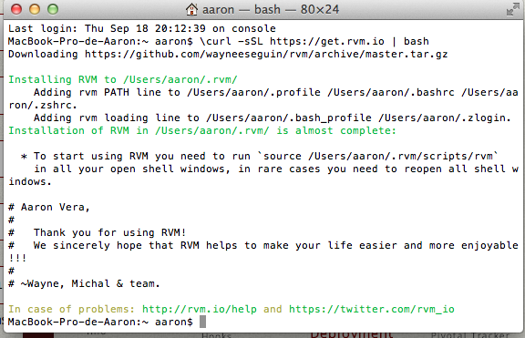
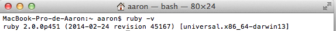
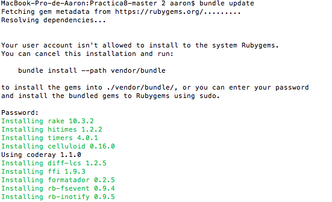
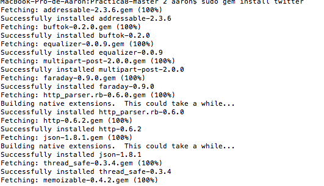

Tutorial Rvm,Ruby y Git
Lo primero que debemos instalar Rvm (Ruby Version Manager) nos permite instalar y gestionar varios intérpretes ruby y conjuntos de gemas (gemsets).
Instalación RVM(Ruby Version Manager)
Para instalar deberemos ejecutar los siguientes comandos_:
$ \curl -L https://get.rvm.io | bash -s stable

En caso de tener instalado para actualizar la version de rvm:
También podemos saber la versión de ruby instalada y que se esta utilizando de la siguiente manera:
ruby -v

Instalación Git
Git es una sistema de control de versiones.
Ya lo tengo instalado,para instalarlo se hace de la siguiente manera:
apt-get install git

Instalación de Gemas
La manera de instalar una gema es la siguiente:
gem install [gem]
Gema sinatra:Es un DSL para crear aplicaciones web rápido y con esfuerzo mínimo. Se trata de una biblioteca de aplicaciones web open source escrita en Ruby.
La podremos instalar con el comando:gem install sinatra
Instalación Gema Bundler
bundler install
bundle update
Para poder comprobar el funcionamiento se crea un Gemfile en un proyecto, y una vez creado, se hace los siguiente:

Instalación Gema Twitter
gem install twitter
